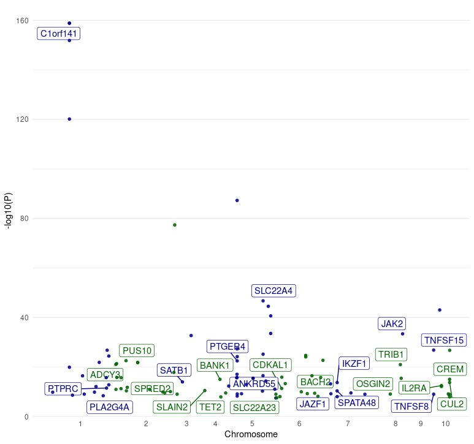
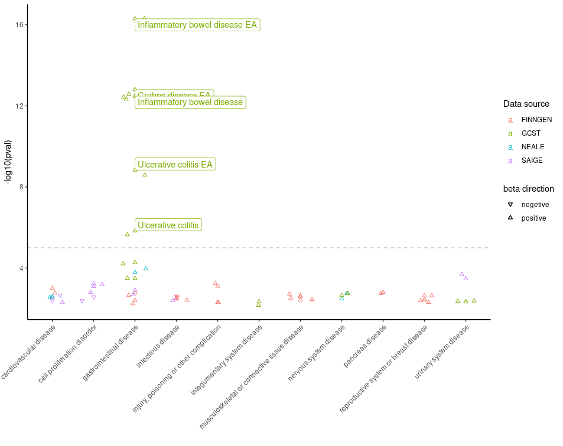
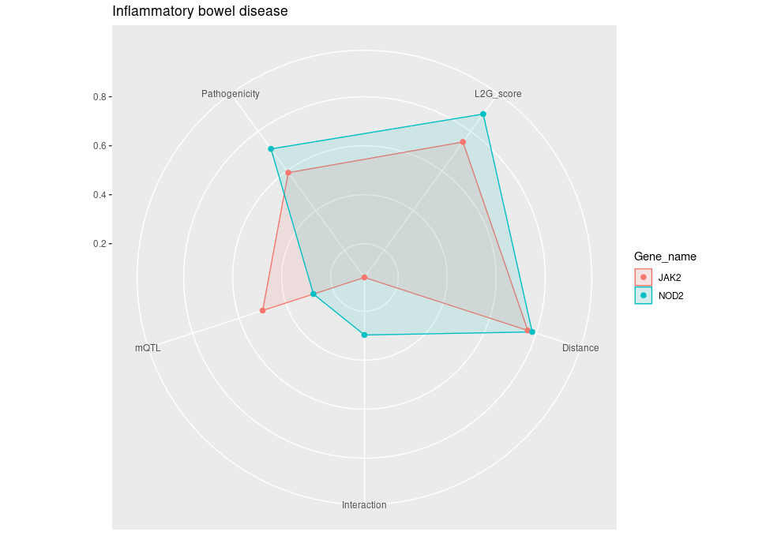

Introduction to otargen
otargen.RmdOpen Targets Genetics offers a GraphQL interface to access different variant-centred statistical summary data types. To query the genetic portal using GraphQL, users can send web requests by command line tools such as curl and wget, execute queries from provided browser endpoint, or connect from R and Python environment. Although these APIs help with data access, there are several existing challenges with each approach which makes the data retrieval non-efficient. Moreover, GraphQL queries return data in json format which are often complex and nested, converting the return data into tidy data tables is another shared complaint among the users.
Due to the popularity of R in bioinformatics and genetics research,
we have developed otargen, a R package based on graphql
that offers diverse functionalities for seamless data retrieval with
tidy data table outputs, plotting essential calculated information, and
executing custom queries. Otargen simplifies the process of
accessing data and facilitates systematic access to OTG data from R,
which allows efficient integration of genetic evidence with the
data-driven target discovery pipelines.. The data primarily revolves
around 3 key components: studyid, variantid
and geneid. Given below are a few examples on how to
retrieve and plot data using the package.
Examples:
1. Retrieve colocalisation data for one or more
genes: Studies which have evidence of
colocalisation of genetic variants associated with both molecular traits
(such as gene expression levels or protein levels) and complex traits
within the same genomic regions.
library(otargen)
colocalisationsForGene(genes=list("ENSG00000163946","ENSG00000169174", "ENSG00000143001"))
# A tibble: 668 × 20
Study Trait_reported Lead_variant Molecular_trait Gene_symbol Tissue Source H3 H4 `log2(H4/H3)`
<chr> <chr> <chr> <chr> <chr> <chr> <chr> <dbl> <dbl> <dbl>
1 GCST900… Mean platelet… 3_56619974_… TASOR ENSG000001… blood Lepik… 0 1 17.3
2 GCST900… Direct low de… 1_55029009_… PCSK9 ENSG000001… iPSC PhLiPS 0 1 11.4
3 GCST900… Direct low de… 1_55029009_… PCSK9 ENSG000001… iPSC iPSCO… 0 1 11.3
4 GCST900… Direct low de… 1_55029009_… PCSK9 ENSG000001… iPSC HipSci 0 1 11.3
5 GCST900… High choleste… 1_55025188_… PCSK9 ENSG000001… tibia… GTEx-… 0 1 10.7
6 NEALE2_… Yes, because … 1_55026242_… PCSK9 ENSG000001… tibia… GTEx-… 0 1 10.4
7 SAIGE_2… Hyperlipidemia 1_55023869_… PCSK9 ENSG000001… lung GTEx-… 0 1 9.82
8 SAIGE_2… Hypercholeste… 1_55023869_… PCSK9 ENSG000001… lung GTEx-… 0 1 9.79
9 SAIGE_2… Disorders of … 1_55023869_… PCSK9 ENSG000001… lung GTEx-… 0 1 9.77
10 SAIGE_2… Hyperlipidemia 1_55023869_… PCSK9 ENSG000001… tibia… GTEx-… 0 1 9.77
# ℹ 658 more rows
# ℹ 10 more variables: Title <chr>, Author <chr>, Has_sumstats <lgl>, numAssocLoci <dbl>,
# `nInitial cohort` <dbl>, study_nReplication <dbl>, study_nCases <dbl>, Publication_date <chr>,
# Journal <chr>, Pubmed_id <chr>2. Retrieve qtl credible set data for a given
gene, studyid, variantid and
biofeature. The function obtains tag variant
information that are considered to have a high probability of being
truly associated with the trait and the corresponding scores.
qtl_cred_set <- qtlCredibleSet(studyid="Braineac2", variantid="rs7552841", gene="PCSK9", biofeature="SUBSTANTIA_NIGRA")
head(qtl_cred_set)
tagVariant.id tagVariant.rsId pval se beta postProb MultisignalMethod logABF is95 is99
1 1_55052794_A_G NA 0.000151568 0.166373 -0.681090 0.002299181 conditional 2.726953 TRUE TRUE
2 1_55054539_G_A NA 0.000482125 0.193346 0.721143 0.001422319 conditional 2.246689 TRUE TRUE
3 1_55241800_A_G NA 0.000634235 0.181505 0.660898 0.001326061 conditional 2.176614 TRUE TRUE
4 1_55246294_A_G NA 0.000527554 0.181065 0.670092 0.001424974 conditional 2.248554 TRUE TRUE
5 1_55248288_C_T NA 0.000650165 0.182720 0.663849 0.001293980 conditional 2.152124 TRUE TRUE
6 1_55248542_G_A NA 0.000650880 0.182789 0.664035 0.001293430 conditional 2.151698 TRUE TRUE3. Retrieves L2G model summary data for
gene(s). The locus-to-gene model utilizes genetic
and functional genomics features to obtain prioritization scores for
likely causal genes at each GWAS locus. The output can be further
filtered by providing l2g score, pvalue and
vtype. vtype refers to the
mostSevereConsequence of a variant on the associated gene.
l2g_results <- studiesAndLeadVariantsForGeneByL2G(genes = "PCSK9", l2g = 0.6, pvalue = 1e-8, vtype = c("intergenic_variant", "intron_variant"))
l2g_results %>% as_tibble()
# A tibble: 40 × 39
yProbaModel yProbaDistance yProbaInteraction yProbaMolecularQTL yProbaPathogenicity pval beta.direction beta.betaCI
<dbl> <dbl> <dbl> <dbl> <dbl> <dbl> <chr> <dbl>
1 0.618 0.544 0.056 0.221 0.615 4.79e-12 + 0.394
2 0.631 0.761 0.284 0.155 0.058 5.23e-20 - -0.0687
3 0.631 0.757 0.284 0.155 0.058 3.54e-20 - -0.0668
4 0.647 0.739 0.25 0.138 0.182 3 e-47 - -0.0544
5 0.652 0.614 0.171 0.637 0.344 3.60e-14 + 0.0156
6 0.656 0.765 0.284 0.279 0.058 1.13e-41 - -0.069
7 0.656 0.765 0.284 0.279 0.058 2.38e-53 - -0.0831
8 0.66 0.69 0.171 0.487 0.047 1 e- 8 - NA
9 0.663 0.756 0.206 0.33 0.056 1 e-10 - -0.03
10 0.664 0.767 0.206 0.614 0.057 1.90e-88 - -0.0487
# ℹ 30 more rows
# ℹ 31 more variables: beta.betaCILower <dbl>, beta.betaCIUpper <dbl>, odds.oddsCI <dbl>, odds.oddsCILower <dbl>,
# odds.oddsCIUpper <dbl>, study.studyId <chr>, study.traitReported <chr>, study.traitCategory <chr>, study.pubDate <chr>,
# study.pubTitle <chr>, study.pubAuthor <chr>, study.pubJournal <chr>, study.pmid <chr>, study.hasSumstats <lgl>,
# study.nCases <int>, study.numAssocLoci <int>, study.nTotal <int>, study.traitEfos <chr>, variant.id <chr>, variant.rsId <chr>,
# variant.chromosome <chr>, variant.position <int>, variant.refAllele <chr>, variant.altAllele <chr>,
# variant.nearestCodingGeneDistance <int>, variant.nearestGeneDistance <int>, variant.mostSevereConsequence <chr>, …4. Obtain detailed information about all the genes present in
a given region of a specified chromosome.
get_genes(chromosome = "2", start = 239634984, end = 241634984)
# A tibble: 27 × 10
id symbol bioType description chromosome tss start end fwdStrand exons
<chr> <chr> <chr> <chr> <chr> <int> <int> <int> <lgl> <lis>
1 ENSG00000006607 FARP2 protein_coding FERM, ARH/RhoGEF and pleckstrin domain prote… 2 2.41e8 2.41e8 2.41e8 TRUE <int>
2 ENSG00000063660 GPC1 protein_coding glypican 1 [Source:HGNC Symbol;Acc:HGNC:4449] 2 2.40e8 2.40e8 2.40e8 TRUE <int>
3 ENSG00000115677 HDLBP protein_coding high density lipoprotein binding protein [So… 2 2.41e8 2.41e8 2.41e8 FALSE <int>
4 ENSG00000115685 PPP1R7 protein_coding protein phosphatase 1 regulatory subunit 7 [… 2 2.41e8 2.41e8 2.41e8 TRUE <int>
5 ENSG00000115687 PASK protein_coding PAS domain containing serine/threonine kinas… 2 2.41e8 2.41e8 2.41e8 FALSE <int>
6 ENSG00000115694 STK25 protein_coding serine/threonine kinase 25 [Source:HGNC Symb… 2 2.42e8 2.41e8 2.42e8 FALSE <int>
7 ENSG00000122085 MTERF4 protein_coding mitochondrial transcription termination fact… 2 2.41e8 2.41e8 2.41e8 FALSE <int>
8 ENSG00000130294 KIF1A protein_coding kinesin family member 1A [Source:HGNC Symbol… 2 2.41e8 2.41e8 2.41e8 FALSE <int>
9 ENSG00000130414 NDUFA10 protein_coding NADH:ubiquinone oxidoreductase subunit A10 [… 2 2.40e8 2.40e8 2.40e8 FALSE <int>
10 ENSG00000142327 RNPEPL1 protein_coding arginyl aminopeptidase like 1 [Source:HGNC S… 2 2.41e8 2.41e8 2.41e8 TRUE <int>
# ℹ 17 more rows
# ℹ Use `print(n = ...)` to see more rows5. Plot data obtained from the manhattan function. A Manhattan plot is used to represent genetic association studies. Here, the plot displays the associated p-value (-log10(P)) for genetic variants across the genome, plotted against their chromosomal regions.
manhattan(studyid = "GCST003044") %>% plot_manhattan()
6. Plot data obtained from the PheWAS function. Phenome wide association study results are filtered for diseases and the -log10 p-value is plotted against the traits. It presents the association results between genetic variants and multiple traits. The traits with p-value < 0.005 is labelled.
pheWAS(variantid = "14_87978408_G_A") %>% plot_phewas(disease = TRUE)
7. Plot the scores obtained from the
studiesAndLeadVariantsForGeneByL2G function and filter it for a
specific disease. A radar plot showing the scores
important for prioritising the causal genes.
studiesAndLeadVariantsForGeneByL2G(list("ENSG00000167207","ENSG00000096968","ENSG00000138821", "ENSG00000125255")) %>% plot_l2g(disease = "EFO_0003767")